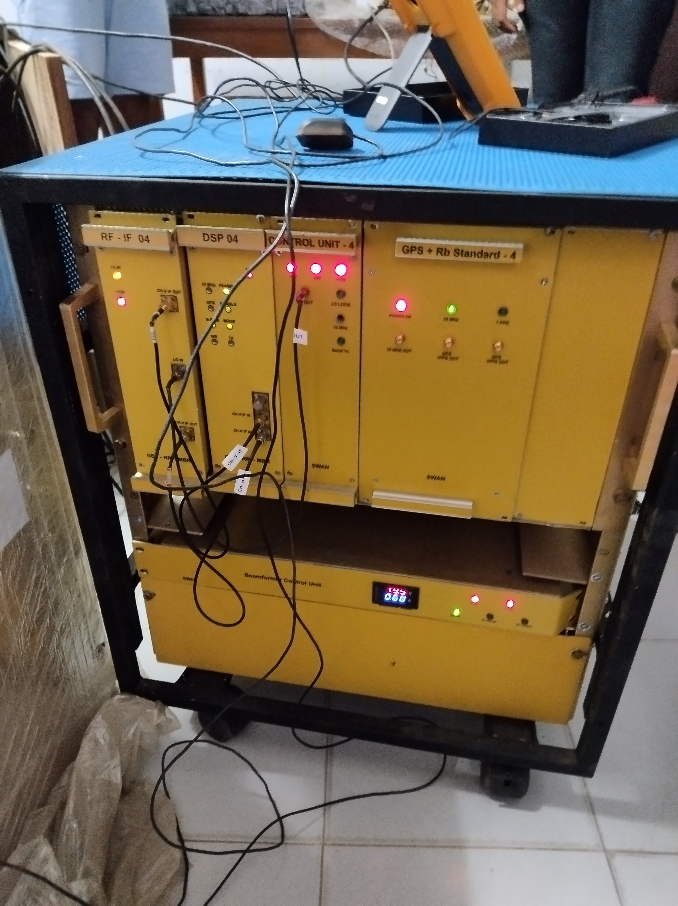
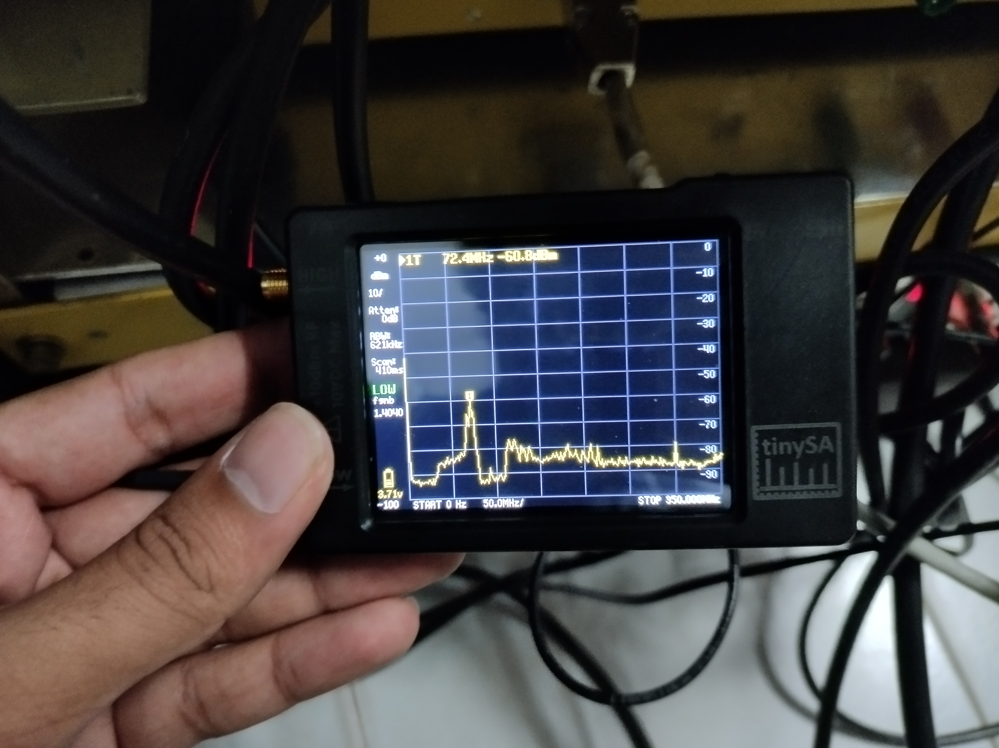

First setup of the SWAN system
After a hectic midsem week, The Radio Astronomy Club, BITS Pilani decided to open up the SWAN system and start setup. We scheduled a meet with the IIT Kanpur SWAN team, and they guided us through the process.
To power on a system you require, well, power. However, a small but not so insignificant problem stood in our path - we couldn’t find the main power plug for the receiver system! The search for this elusive plug led to us unscrewing the bottom-most panel where we found the cable coiled up under the receiver, explaining our inability to locate it. We connected it to a 230V supply and switched on the circuit breakers to check for power in the extension board.

A good practice to follow when working with RF electronics (or electronics in general) is to switch off your main power source before making any new connections. Keeping this in mind, we connected the various blocks (RF frontend, RF-IF unit, DSP unit, Control Unit and the GPS+Rb clock unit) in the receiver system to power, verifying the connections were tight and fit.

In order to calibrate the GPS, we had to connect a GPS antenna to the block. This small device captures signals from GPS satellites at multiple frequencies. The receiver uses the received signal to give an accurate estimate of the location.
Lastly, the beamforming unit receives two inputs from the receiver system (specfically the Beamformer Control Unit) - power and control; and 16 pairs of H and V polarized RF data from 16 antenna elements. We only connected one of these for the first run. We measured a current of 0.68A being drawn over the receiver. The beamformer sends back H and V data through the thick cables in the middle.

With the all the connections complete, we switched on the system to see the spectrum observed inside our lab. Looking at the spectrum, we see a dip around 80 MHz representing the notch filter in the RF frontend blocking out the FM band. Ironically, most of Pilani doesn’t receive FM radio which happens to be a large hindrance in other institutes such as St Stephens and IIT Kanpur due to their location in large cities.

The peak right before the notch is mostly RFI from a few labs in the same building. However, we don’t expect to receive the RFI in the field, i.e. the final location of the tile.